Greatest Scientist
Dr.Apj Abdul Kalam.
Former president of India&Principal Scientific Adviser to the Government of India
Avul Pakir Jainulabdeen Abdul Kalam
15 October 1931 – 27 July 2015 was an Indian aerospace scientist and statesman who served as the 11th president of India from 2002 to 2007. He was born and raised in Rameswaram, Tamil Nadu and studied physics and aerospace engineering. He spent the next four decades as a scientist and science administrator, mainly at the Defence Research and Development Organisation (DRDO) and Indian Space Research Organisation (ISRO) and was intimately involved in India's civilian space programme and military missile development efforts.He thus came to be known as the Missile Man of India for his work on the development of ballistic missile and launch vehicle technology. He also played a pivotal organisational, technical, and political role in India's Pokhran-II nuclear tests in 1998, the first since the original nuclear test by India in 1974.
India’s First Satellite Launch Vehicle ..
Dr Kalam put in over 10-year-long hard work as the project development of the indigeneous slv at ISRO
Nuclear Tests in Pokhran
As Secretary of the DRDO from July 1992 to December 1999, Kalam played major role heading the Pokhran-II
Achievements of Apj
 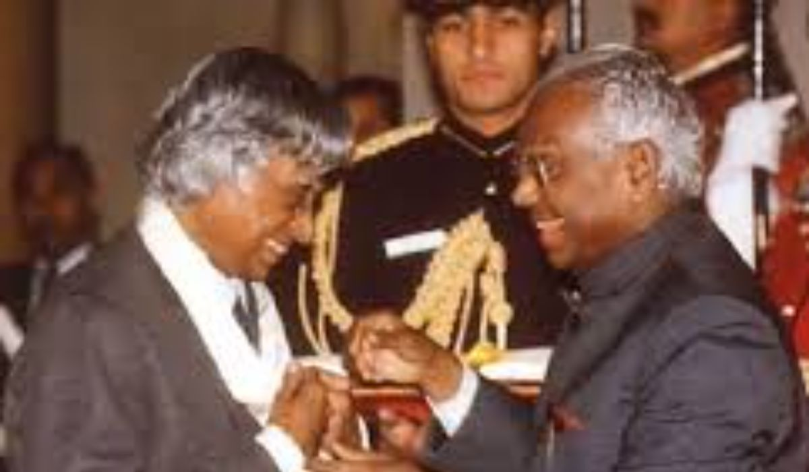
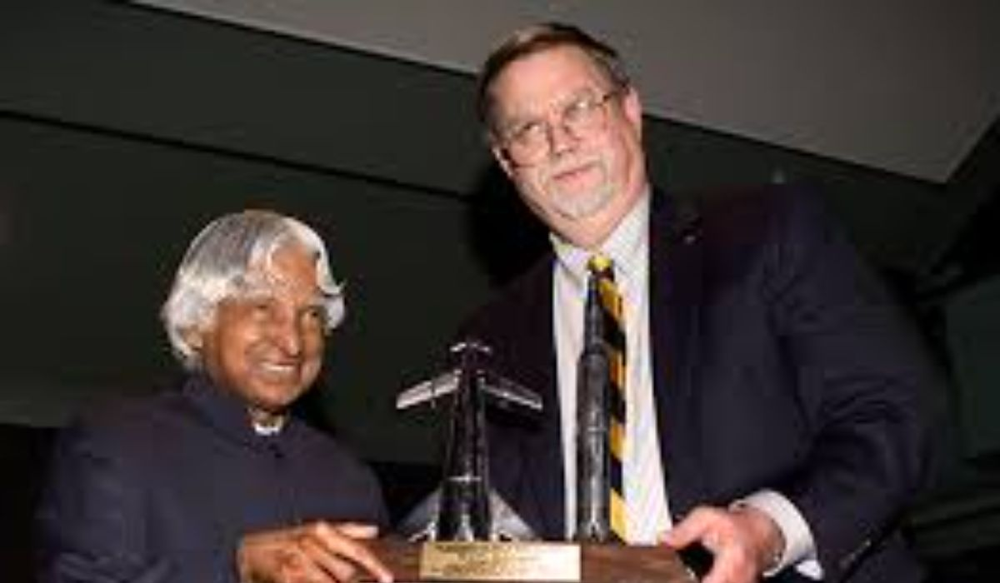
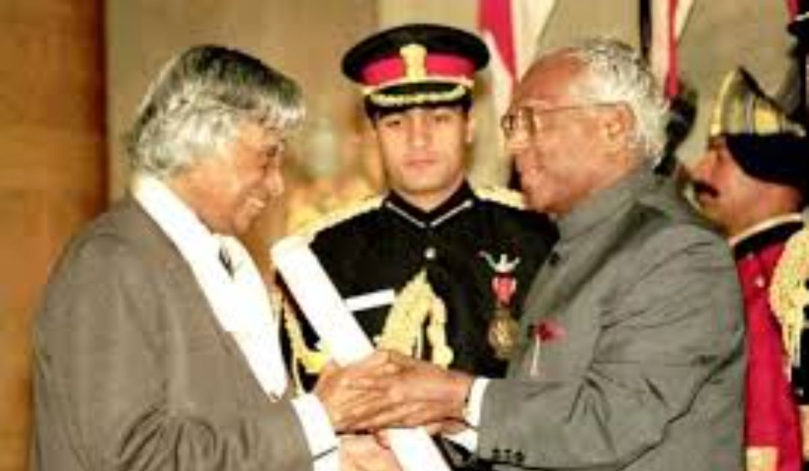
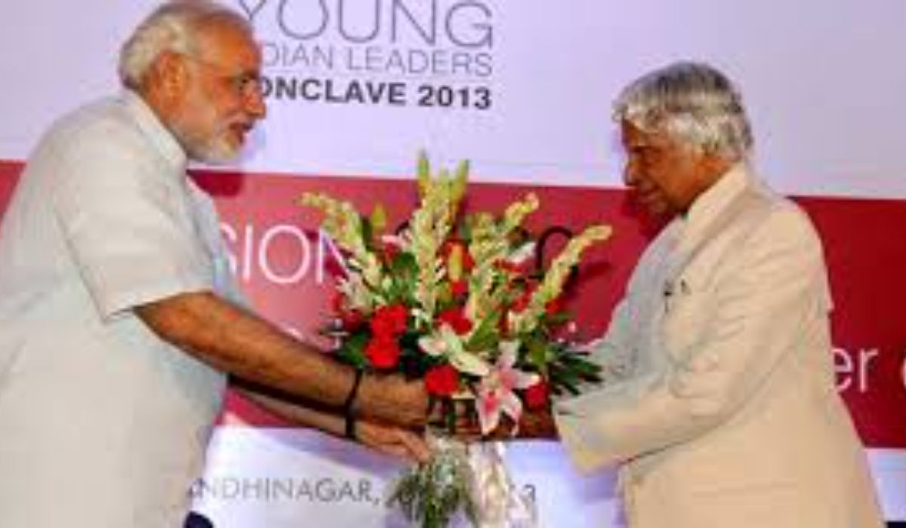
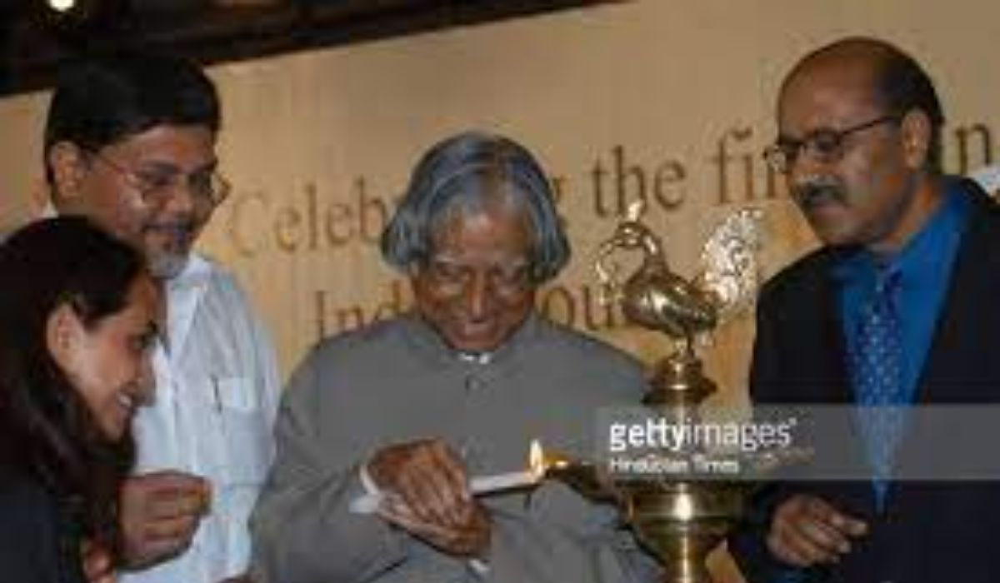
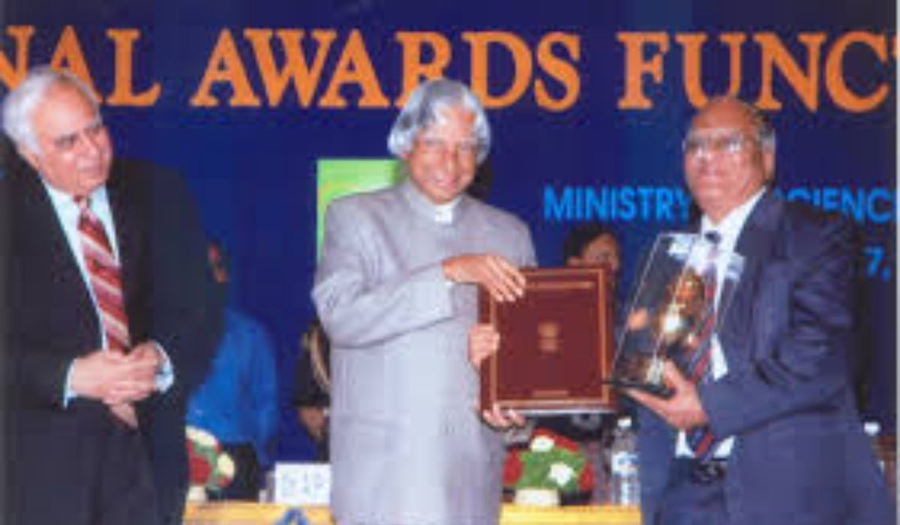
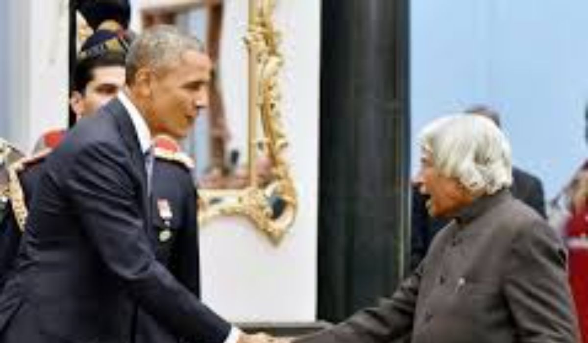
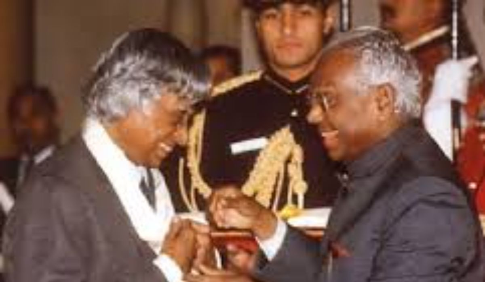
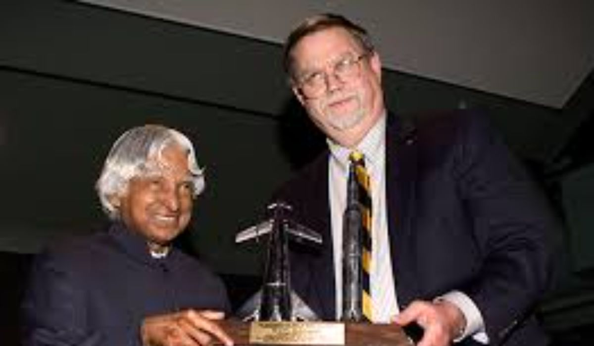
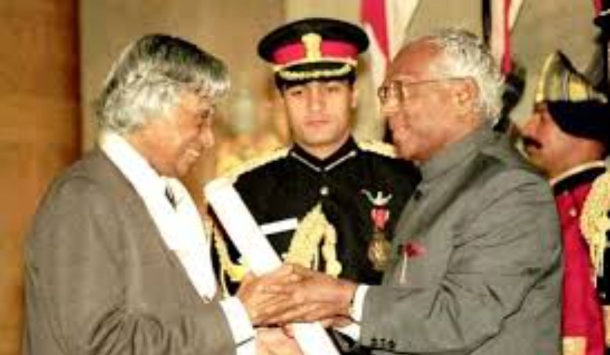
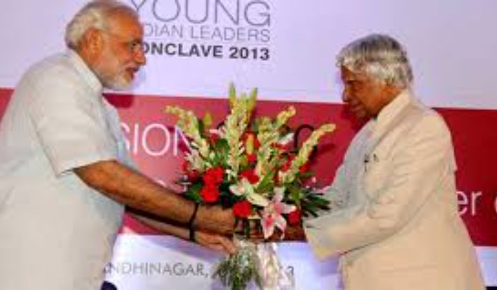
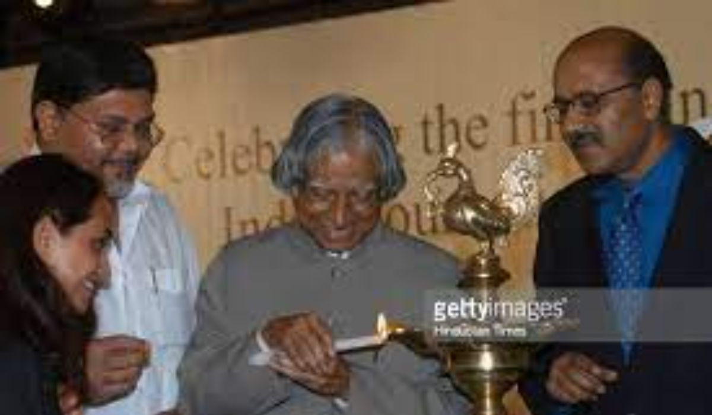
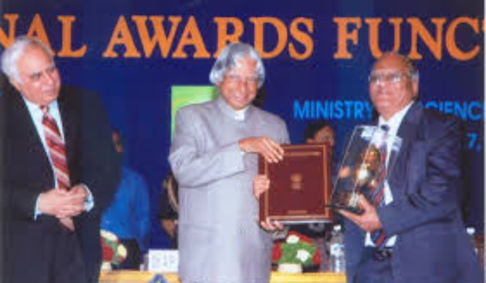
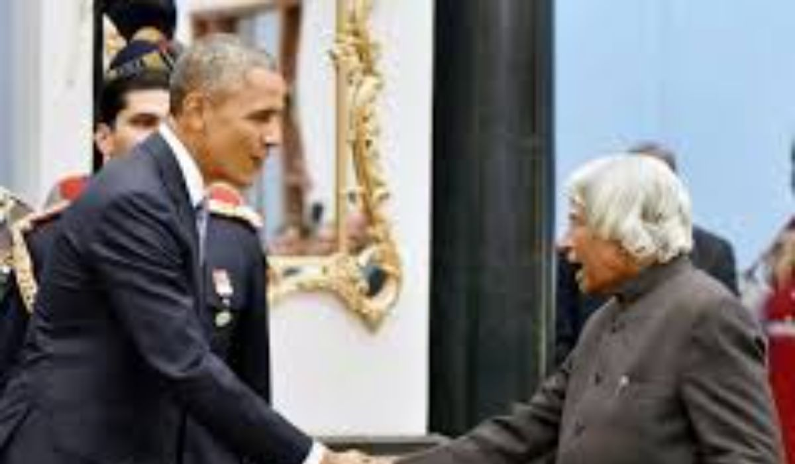